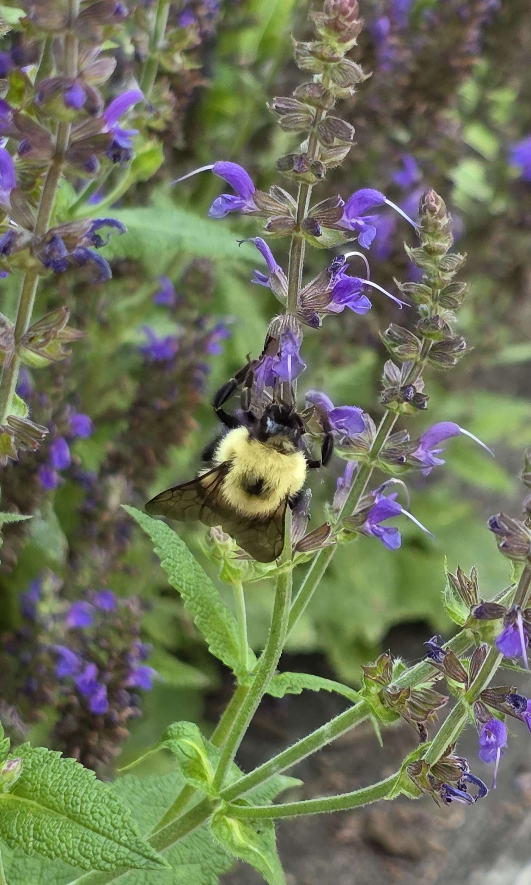
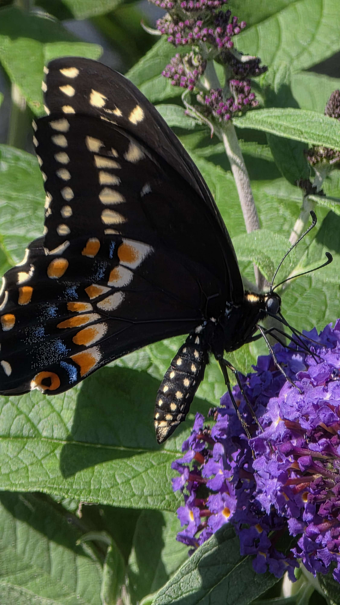
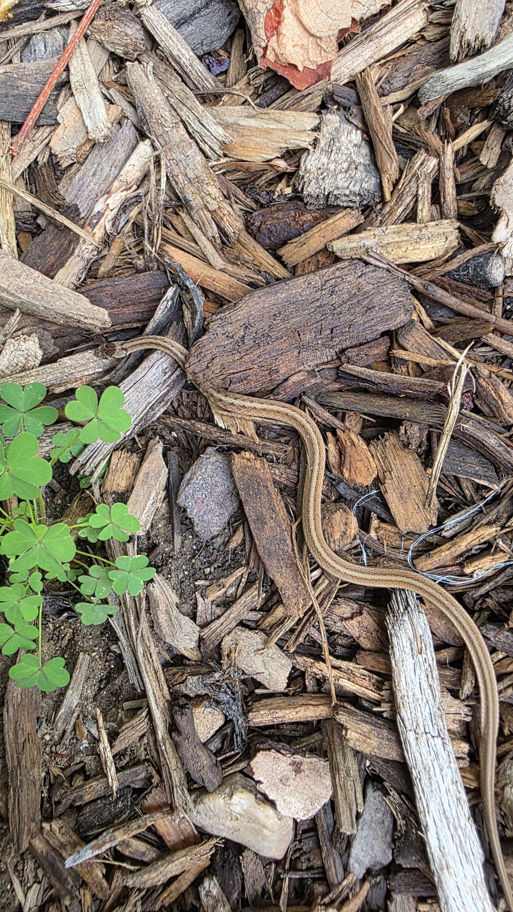

pollinator moment
Bumblebee on catmint
A fuzzy bumblebee working purple catmint blooms, exactly the kind of small pollinator moment that makes the garden feel alive instead of merely planted.
Pollinators, beneficials, and little moments of life that make the garden feel active and real, including the occasional wild visitor passing through.

A fuzzy bumblebee working purple catmint blooms, exactly the kind of small pollinator moment that makes the garden feel alive instead of merely planted.

A sharper close-up of the same kind of summer pollinator moment, the black swallowtail showing off those cream spots, blue wash, and orange hindwing markings while feeding on the butterfly bush.

Likely an eastern gartersnake, slim, striped, and completely at home slipping through the mulch. A good reminder that the garden is not just planted space, it’s habitat.